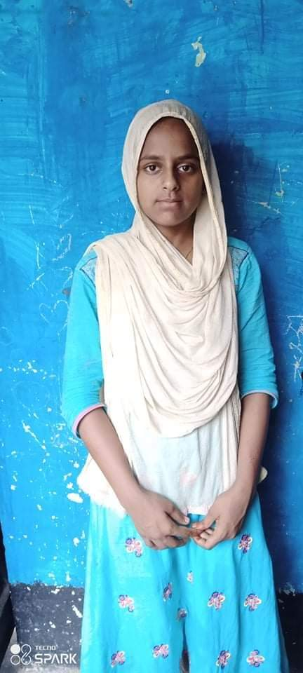
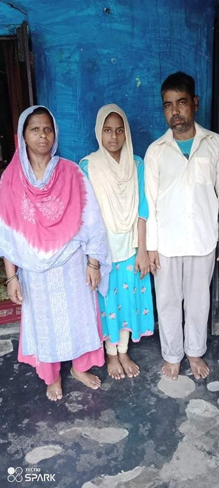

Mahira in her class-room

Case Study:Mahira's Life Stroy
Mahira comes from a small town in Bangladesh called Saidpur.Her father name is Md.Nadim and her mother's name is Mst.Sogra.There are five member's in her family.They lives in a broken hut in a slum of Gardpara.Her father is a day laborer.Her father had a hard time to find a good job and feeding her family.He earns hand to mought.Most of the time they had to starve.In 2015,I go to their home to survey.I spoke to her parents and got her admitted to Saidpur Learning Center.Her parents told me that they want be able to bought books for their daughter.I told them that I will give her book's.In 2015,Dr.Shahid Ahmed Sir gave free books and notebooks.After getting books Mahira was so excited and she become more attentive on her studies.I used deep learning method and make her understand all.I also gave her home work and she was so attentive.She is a quick learner child.She always stood up first in all exams which held in my center.
Mahira with her family

After passing a year,I took her and got her admitted in a primary school.She always become first in school.She was also in our coaching classes.But now she is in class seven OBAT high school.I hope that she become a independent and self-depended girl.She wants to become a Doctor.She wants to serve the nation.At last, I have something to say, when she will be in a class nine or ten her father may not be able to bear all the expenses of her studies.I wish taht our DoPeace Schools were up to 10th class.Sooth Mahira may have the opportunity to study and became a self-depended girl.I visit Mahira's house often and always encourage her with positivity.I also make her assure that I will help her in every stage of life.She always asked me to pray for her.She wants to become a self-depended girl.Inspite of having will and talent due to poverty she may drop out her dreams.Who will came forward to help her? So the dreams of the future may remain dreams in her life.If there is any kind hearted person who will come forward to help her,Only then Mahira will be a successful person.